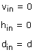
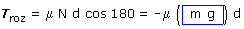
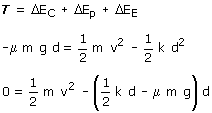
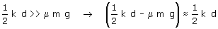

Descompresión del muelle
Cambios de energía:
 |
 |
|
|

Cálculo del trabajo
 |
Tpeso (Ya está contado en la variacion de energía potencial) Tmuelle (Ya esta contado en la variación de energía elástica) TN = 0 (La normal es perpendicular al desplazamiento)  |
Aplicando el principio de Conservación:

Vamos a hacer una aproximación para simplificar la expresión:

Estamos suponiendo que la fuerza media del muelle al expandirse es mucho mayor que la fuerza de rozamiento En este caso podemos comprobar la veracidad de esta hipótesis utilizando los valores numéricos:

La fuerza media del muelle es unas 10 veces mayor que la del rozamiento o sea que vamos bien...

El resultado obtenido nos indica que toda la energía elástica almacenada en el muelle se convierte en energía cinética del bloque, no se pierde prácticamente nada por el rozamiento.